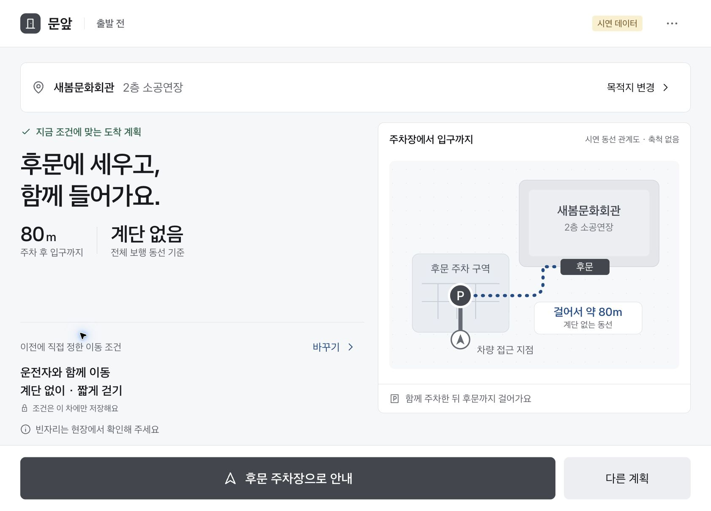
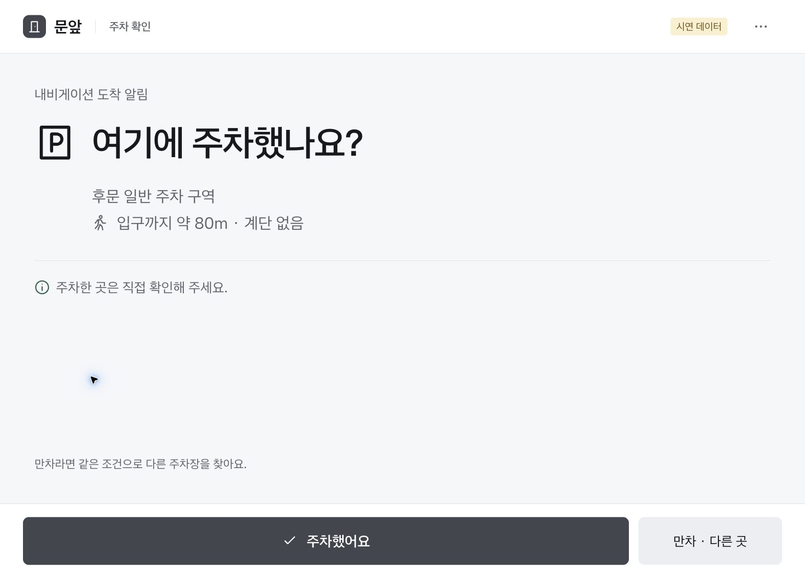
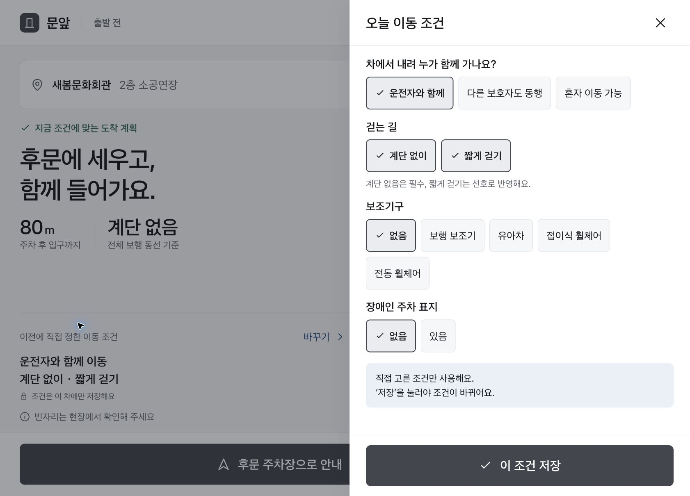
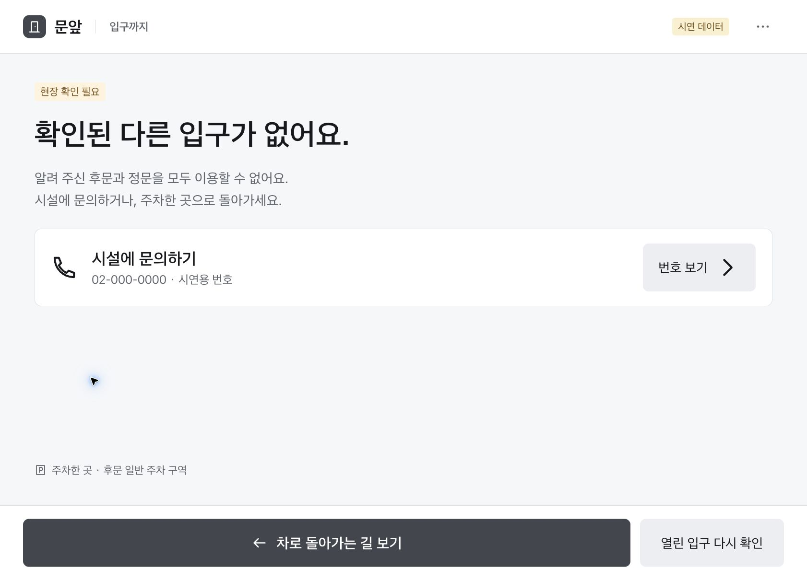

01 · 출발 전
첫 화면에서 확인하고 바로 안내
이전에 직접 저장한 조건을 펼쳐 보여 줘요. 처음 쓰는 사람은 조건을 직접 정한 뒤 추천해요.
목적지와 조건, 추천을 한 화면에서 확인하고 바로 출발해요.
주차 뒤에는 휴대폰으로 이어 보고, 필요한 순간에만 직접 확인해요.
같은 목적지·저장된 조건 기준. ‘계획 보기’와 ‘내비 안내’를 합쳐 첫 화면에서 바로 시작해요.
차량의 ‘입구로 출발’ 버튼을 없애요. 주차 뒤 QR을 열어 바로 걷고 도착만 확인해요.
기어·문 열림으로 사람의 도착을 추정하지 않아요. 주차와 입구 도착은 직접 확인해요.
가상 가족 시나리오의 흐름을 ‘할머니도 갈게 → 그래, 같이 가자 → 오늘은 내가 고를게’로 연결했습니다. 8장면 스토리보드 보기 ↗
앱 창 1682×1210 기준. Pleos의 시스템 상태바·GNB는 OS가 그리는 영역이므로 시안에 복제하지 않았어요. 모든 화면은 실제 APK 캡처가 아닌 제안입니다.

이전에 직접 저장한 조건을 펼쳐 보여 줘요. 처음 쓰는 사람은 조건을 직접 정한 뒤 추천해요.

주행 제한에 따라 비교·설정·QR을 감춰요. 실제 안내 시작 응답을 받아야 이 상태로 바뀌어요.

내비 도착은 주차 완료가 아니에요. 주행 제한이 풀린 뒤 주차 확인을 받아요. 다른 곳에 세움은 보조 메뉴에서 처리해요.

출발 확인을 또 요구하지 않아요. 주차 메모는 선택이고, 휴대폰이 없어도 안내를 확인할 수 있어요.
390×844 기준. 앱 설치 없이 같은 계획을 이어 보는 흐름입니다. 안내 순서는 시설 시연 데이터에서 가져왔으며 현재 위치 추적이나 실시간 보행 내비가 아닙니다.

큰 이동 순서와 입구 이미지를 한 화면에. 도착 버튼은 아래에 고정해요.

설문과 추가 설정 없이, 돌아갈 때 누를 버튼만 남겨요.

시설의 복귀 순서를 다시 보여 줘요. 마지막 확인은 차에 탄 뒤 차량에서 해요.
주차장 기준 기존 약 80m와 대안 약 140m를 비교하고, 수락 전에 계획을 바꾸지 않습니다. 현재 위치에서 남은 거리나 추가 보행 거리로 표시하지 않습니다. 차량 앱에는 아직 반영하지 않은 UX 개선안입니다.

임시 선택과 저장을 분리해 닫기만 했을 때 조건이 바뀌지 않도록 해요.

도보 중 이용 가능한 입구가 없으면 시설 연락처와 차로 돌아가기를 제공해요.
840×1210의 좁은 앱 창에서는 관계도를 감추고 추천·거리·조건·주 행동을 세로로 정리했습니다. 분할 화면 캡처 보기 ↗